练习⑤ 月末処理と発展（差异・棚卸・缺品・故障）
.png 放进 assets/gui/ 后执行 python3 tools/swap_gui_images.py <site> --apply 即可一键替换。前四个练习让流程「跑起来」，本练习让它「结算得了、救得回来」：差异算出来 → 决済到 FI；缺品算得准 → 知道该补哪里；故障查得到 → 有对照表。做完这个练习，你就能独立维护一条见込生产的线。
5-1 差異計算（KKS1 一括 / KKS2 単品目）
差异计算的输入是目标原価（標準 × 出来高）与実際原価（実績）。差异被拆成若干差異カテゴリ——这是「为什么会差」的解释器。
| T-code | 用途 | 要点 |
|---|---|---|
KKS2 | 単品目の差異計算 | 指図 1 件（或は複数指定）。练习先从这里开始，结果好读 |
KKS1 | 一括の差異計算 | プラント/期間/指図タイプ単位。本番はこちら |
KKA1 / KKAO | WIP（仕掛）計算（単品 / 一括） | 未完了の指図に対する仕掛。差異と一緒に決済される |
見るべき差異カテゴリ（通常は〜。番号は環境で確認）
| 差異カテゴリ | 意味 | MTS での典型原因 |
|---|---|---|
| 入力価格差異（input price variance） | 部品・活動の単価が標準と違う | 部品の実際単価上昇、レート改定（KP26） |
| 入力数量差異（input quantity variance） | 投入した数量が標準と違う | 部品の過消費、BOM と実態のずれ |
| 資源使用差異（resource usage variance） | 作業時間・能力の使用が標準と違う | 実績時間の入力ミス・歩留低下による時間増 |
| 混合価格差異（mixed-price variance） | 原価計算ロット/混合による評価のずれ | ロットサイズ設定・評価バリアント |
| 出力価格差異（output price variance） | 出来高の評価単価が標準と違う | 標準価格のリリース時点/期中変更 |
| スクラップ差異（scrap variance） | 計画スクラップと実スクラップの差 | 不良 10 PC のような実スクラップ（练习③） |
| 残差（remaining variance） | 上のどれにも分類されない残り | 設定漏れの見張り番。大きい残差は設定を見直すサイン |
CO03で指図の状態（CNF/DLV）と実際原価を確認（決済対象の条件）。KKS2→ 指図番号 → 期間（会計期間）→ 実行 → 差異の一覧（カテゴリ別）を確認。- 「目標原価・実際原価・差異」の 3 列と、カテゴリ別の内訳を記録する。
- （一括）
KKS1→ プラント / 指図タイプPP01/ 期間 → 実行 → ログで処理件数と差異を確認。
KKS2/KKS1 の結果リスト（差異カテゴリと金額）。再表示は同じ T-code で「照会」或は CO03 → 明細 → 差異。設定側：差異キー（
OKV1）・プラントへの割当（OKVW）・差異計算バリアント（OKVG）・目標原価バージョン（SPRO）——T-code と画面名は版本で異なるので SPRO の検索で「差異」を探す。差異カテゴリの定義は SAP Help Variance Categories。
② 差異が 0 → 実績未入力（
CO11N 未実施）或は PGI/入庫が期末前に完結していない。③ 残差が大きい → 差異カテゴリの割当（差異キー/バリアント）を見直す。残差を無理に消さない（原因を追う）。
さらに：同じ指図で作業時間を 10 倍に入れると、どのカテゴリが膨らむかを予想してから実行する（予想と結果を書く——これが「差異を読む力」の訓練）。
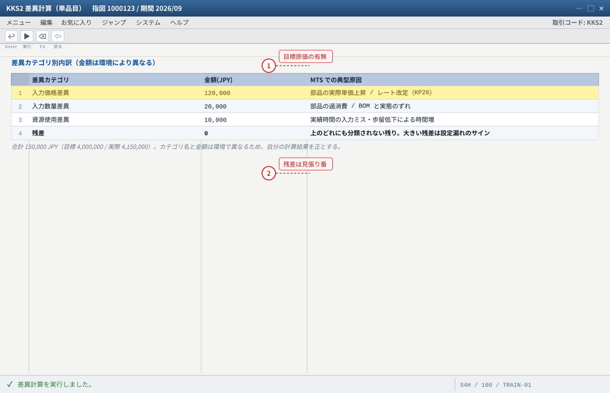
- 1 「目標原価がありません」と言われたら標準価格が未リリース（C4 / CK24）
- 2 残差が大きいときは差異キー / バリアントの割当を見直す。無理に消さず原因を追う
自システムでの確認：設定側は OKV1（差異キー）/ OKVW / OKVG（差異計算バリアント）。T-code と画面名は版本で異なるため SPRO の検索で「差異」を探してください。
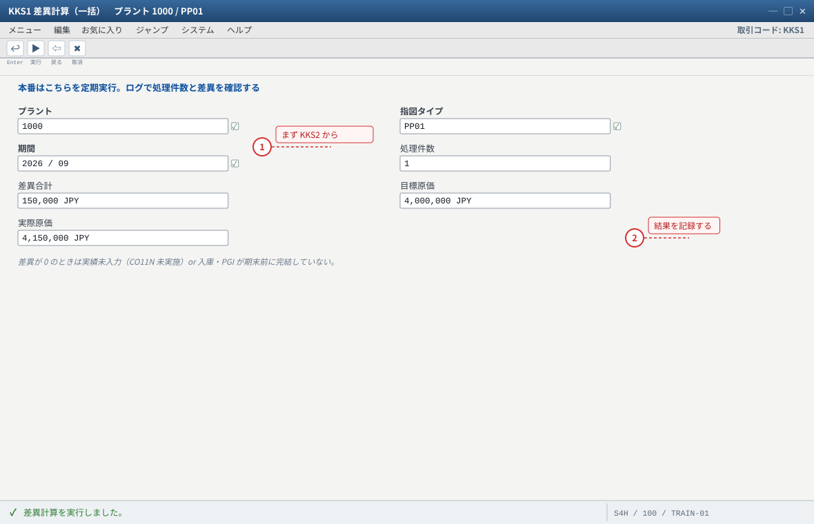
- 1 练习は KKS2（単品目）から。結果が読みやすく、原因の切り分けが速い
- 2 ログの処理件数と差異合計を記録して 5-2 の決済に進む
自システムでの確認：再表示は同じ T-code の「照会」または CO03 → 明細 → 差異。差異カテゴリの定義は SAP Help Variance Categories。
5-2 指図の決済（KO88 / CO88）
差异算出来只是「知道」，决済（決済）才是把钱送到 FI。KO88/CO88 会把差异（与 WIP）按決済ルール转记到成本要素。
| T-code | 用途 | 前提 |
|---|---|---|
KO88 | 単品目/選択した指図の決済 | 指図が DLV 或は TECO、差異計算済み（KKS1/KKS2） |
CO88 | 一括決済（プラント・期間・指図タイプ） | 同上。本番はこちらを定期実行 |
| 決済の設定 | 決済プロファイル / 決済ルール（差異 → 差異勘定、WIP → 仕掛勘定） | SPRO（管理会計 > 製品原価管理 > 指図 > 決済）。T-code と名称は環境で確認 |
CO03で指図の状態を確認（DLVになっているか。CNFのままでも決済可能な場合があるが、決済ルール次第）。KO88→ 指図番号 → 期間 → 実行（テスト実行 → 本番実行）。ログに「決済されました」+ 会計伝票番号が出る。FB03で決済の会計伝票を確認（差異勘定・仕掛勘定・在庫勘定の動き）。- 一括を試す場合は
CO88→ プラント1000/ 指図タイプPP01/ 期間 → 実行 → ログ確認。 - （発展）差異の行き先を確認：在庫に残った分（未売却分）と、売上原価に流れた分（売却分）があることを
CO03とFB03で追う。
KO88/CO88 の実行ログ（決済済み・会計伝票番号）→ FB03 で伝票 → 差異勘定の金額が KKS2 の差異と一致するか。表：
SE16N: COBRB（決済ルール）・AUFK-STAT（決済状態）。KKS1 先）或は決済ルール未設定。② 会計期間が閉じている → 前月の差異が決済できない（
OB52 で期間を確認、权限が必要）。③ 決済を二重に実行 → 既に決済済みの指図は対象外になる（ステータスが「決済済」）。
④ 差異の金額が
KKS2 と一致しない → 決済対象期間・目標原価バージョン・WIP の扱いの違い。ログを 1 件ずつ突き合わせる。FB03 の会計伝票と CO03 の差異を突き合わせて 3 行で説明する。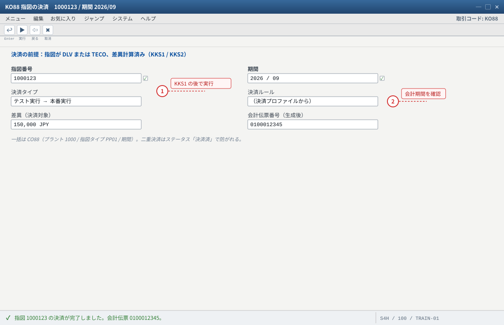
- 1 「決済すべきものがありません」→ 差異計算未実施（KKS1 が先）or 決済ルール未設定
- 2 会計期間が閉じていると前月の差異が決済できない（OB52 を確認、权限が必要）
自システムでの確認：実行ログ（決済済み・会計伝票番号）→ FB03 で伝票。表は SE16N: COBRB（決済ルール）/ AUFK-STAT。
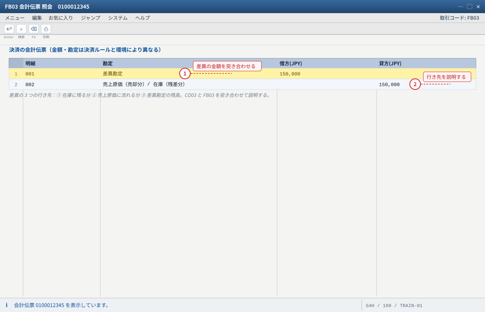
- 1 差異の金額が KKS2 の結果と一致するか確認する（一致しないときは期間・目標原価バージョン・WIP の扱いを疑う）
- 2 決済で違いが消えた「どこに消えたか」を 3 行で説明できることがゴール
自システムでの確認：差異・WIP の勘定は決済プロファイル / 決済ルール（SPRO：管理会計 > 製品原価管理 > 指図 > 決済）で確認してください。
5-3 棚卸（MI01 / MI04 / MI07）
見込生産的库存是「公司自己的」，所以要実地棚卸（盘点）——这是与 MTO 的受注在庫在运用面最大的差别之一（受注在庫基本不在盘点口径内，或按受注分别确认）。
| T-code | 手顺 | 要点 |
|---|---|---|
MI01 | 棚卸伝票の作成（品目/プラント/保管場所、棚卸基準日、凍結/記帳ブロックの設定） | 棚卸中に库存が動くと差異の原因になる |
MI04 | 数えた実地数量の入力 | 差異（帳簿在庫 vs 実地）が出る |
MI07 | 差異の転記（評価・在庫の修正） | 転記先は OBYC の設定（BSX 在庫勘定 / GBB 差異勘定） |
MI31 / MI10 | 一括の棚卸伝票作成 / 一括入力 | 本番はプラント単位でまとめて |
MMBEで帳簿在庫（例 300 PC）を確認。MI01→ 品目ZMTS-FG01/ プラント1000/ 保管場所0001/ 棚卸基準日 → 「棚卸中（在庫凍結）」等のフラグを立てて保存。MI04→ 伝票番号 → 実地数量（例 298 PC）を入力。MI07→ 転記 → 差異の会計伝票を確認。MMBEで在庫が実地数量に更新されたことを確認。
MI03（棚卸伝票の照会）・MMBE（在庫更新）・FB03（差異の会計伝票）。差異の転記先の勘定は
OBYC：BSX（在庫勘定）と GBB（棚卸差異 INV 系キー）。キーの名称は環境で確認。②
MI07 で転記できない → 評価クラス・OBYC の設定不足、或は会計期間閉鎖。③ 棚卸差異は見込生産では必ず起きる（ロットはかり間違い・スクラップ未記録）。まず記録の整備を疑う。
FB03 で確認する。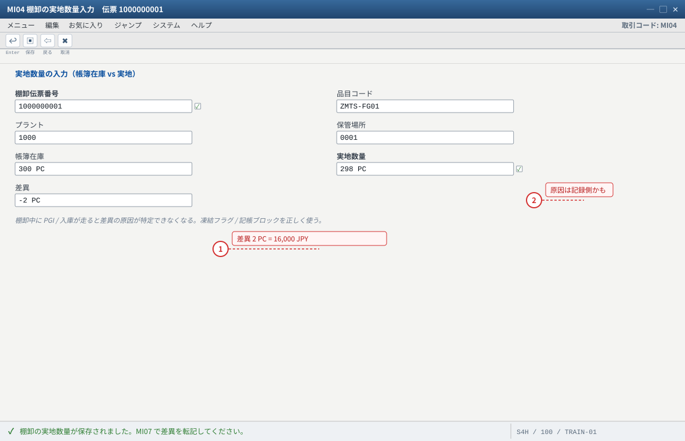
- 1 差異 2 PC × 標準価格 8,000 = 16,000 JPY が MI07 で転記される
- 2 棚卸差異は見込生産では必ず起きる。まず記録（スクラップ未記録・数え間違い）の整備を疑う
自システムでの確認：MI03（棚卸伝票の照会）・MMBE（在庫更新）・FB03（差異の会計伝票）。転記科目は OBYC の BSX / GBB。
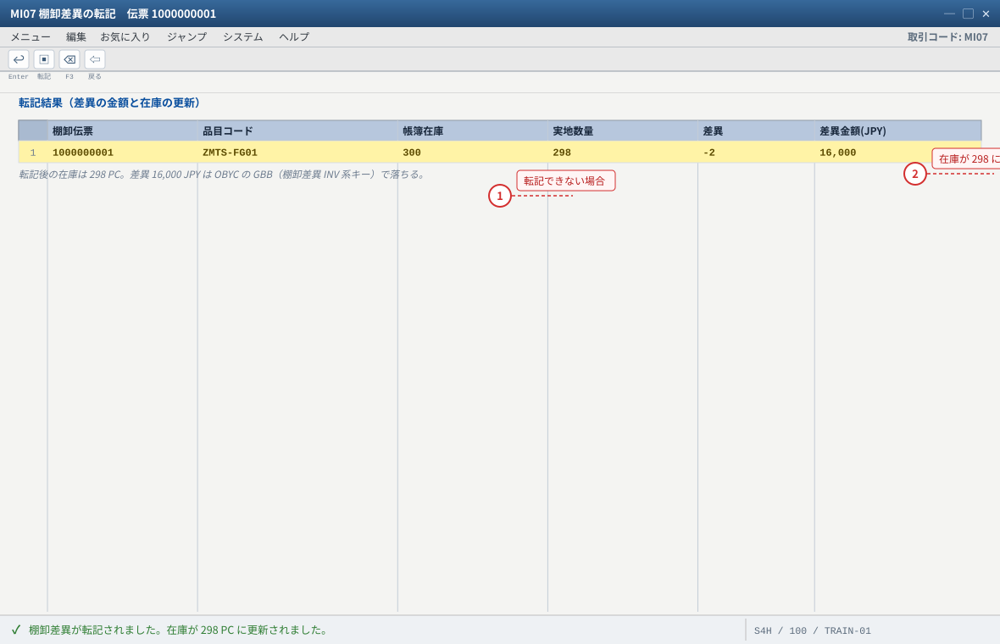
- 1 MI07 で転記できないときは評価クラス・OBYC の設定不足 or 会計期間閉鎖を疑う
- 2 MB52 / MMBE で在庫が実地数量 298 PC になっていることを確認する
自システムでの確認：MMBE / MB52 の在庫、FB03 の会計伝票。一括は MI31（伝票作成）/ MI10（入力）。
5-4 安全在庫切れ・欠品時の対応（見込生産の「救急セット」）
見込生産の欠品は「予測が外れた」か「生产没跟上」的どちらか。切り分けの順序を固定しておくと、慌てずに済む。
【切り分けの順序】 1. 本当に在庫が足りないか？ MMBE / MB52（自由在庫・特在・保留を分けて見る） 2. 需要側が増えたのか？ MD04（受注が期待以上）/ MD73（PIR が残っているか） 3. 供給側が遅れたのか？ CO03（指図の状態・納期）/ MD04 の計画手配 4. 引当・締めの問題か？ CO09 の出庫予定 / VL03N の引当 / 別受注が先取り 5. 物流側か？ 保管場所違い・在庫タイプ（品質検査/ブロック）違い 【打ち手（重い順ではなく、効く順）】 a) 引当の付け替え（V_V2 で納期再設定・納入日程行の再確認） b) 追加入庫の前倒し（指図を CO02 で納期前倒し + 実績・101） c) 別プラント/別保管場所からの補充（在庫転送 301/303 系） d) 一部出荷 + 残は次回納入（納入日程行の分割） e) 需要調整（PIR の消減/消減、受注の納期変更） f) 現実的な最終手段：欠品を認める（見込生産では「隠す」より「見せる」が原則）
| 状態 | 見え方 | まず見るもの |
|---|---|---|
| 在庫が安全在庫を割った | MD04 の利用可能数量が安全在庫を下回る、MRP が追加の計画手配を出す | MM03 MRP2 の安全在庫・MD04 |
| 欠品（受注が引当不能） | VA03 の確認済 0 / CO09 の利用可能数量マイナス | CO09・V_V2・VL03N |
| 別の受注に取られた | 在庫はあるのに自分の受注が引当不能 | CO09 の出庫予定順（伝票登録順） |
| 在生产中で入库未了 | 指図が REL/CNF のまま、入庫予定が未来 | CO03・MD04 の入庫予定 |
MMBE（在庫タイプ別：非制限/品質検査/ブロック/受注在庫）→ MB52（保管場所別）→ CO09（可用量と要素）→ MD04（時系列の需要と供給）。この 4 つをこの順で見るのが定石。MMBE の区分を全部見る。② 安全在庫を守ろうとして出荷を止める → 安全在庫は守るべき絶対量ではなく、MRP の補貨トリガ。出荷可否は受注の引当と納期で決める。
③ 欠品を隠して後で辻褄を合わせる → 見込生産で最も危険な運用法。差異・棚卸・差異カテゴリが全部崩れる。
MD04 の予測で書く（実行は任意）。ヒント：受注 250 を入れると PIR を消費するが、在庫は
MMBE 上まだ 300。ATP と実際の在庫は別物であることを押さえる。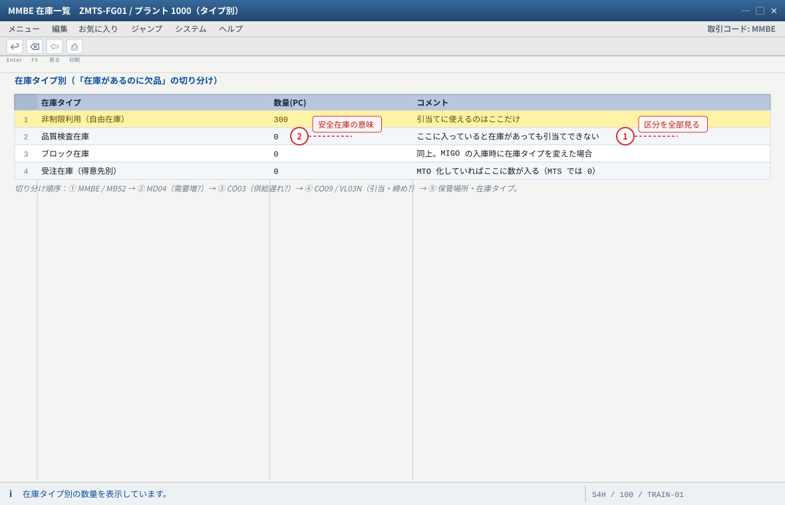
- 1 在庫があるのに欠品 → 別の在庫タイプ / 別の保管場所 / 別受注の先取りを疑う
- 2 安全在庫は守るべき絶対量ではなく MRP の補貨トリガ。出荷可否は引当と納期で決める
自システムでの確認：MB52（保管場所別）→ CO09（可用量と要素）→ MD04（時系列）の順で見るのが定石です。
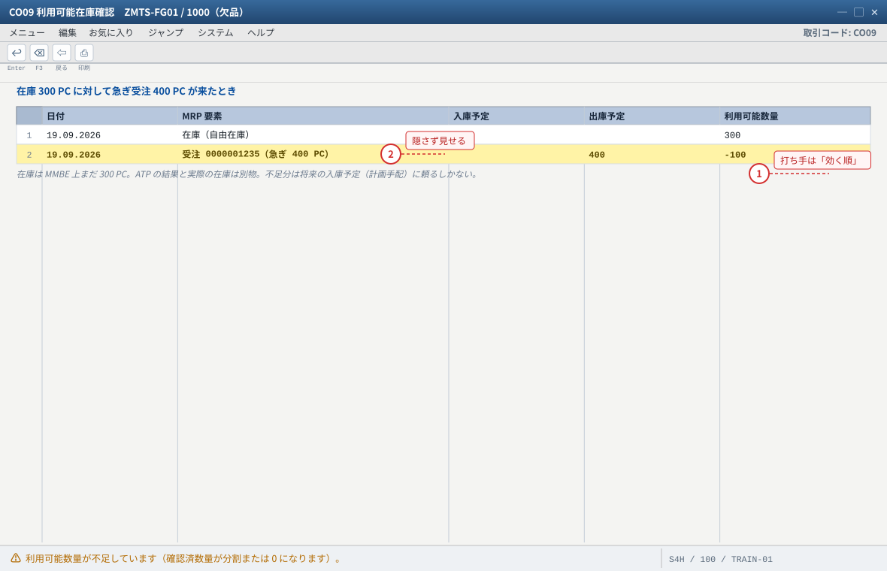
- 1 打ち手：V_V2 で納期再設定 / 指図の前倒し / 在庫転送 / 納入日程行の分割
- 2 欠品を隠して後で辻褄を合わせるのが最も危険。差異・棚卸・差異カテゴリが全部崩れる
自システムでの確認：VL03N の在庫/引当、CO09 の出庫予定順（伝票登録順）で「誰が先に取ったか」を確認します。
5-5 見込在庫と受注の取り合い（MTS の経営的な意味）
MTS 的库存是「誰のものでもない」——だからこそ速く売れるが、余れば自分の責任になる。この「取り合い」の構造を理解すると、見込生産の計画パラメータ（安全在庫・ロットサイズ・リードタイム）が何のためにあるかが見えてくる。
| 構造 | MTS | MTO |
|---|---|---|
| 库存の所有者 | 全社（自由在庫） | その受注だけ（E 特在） |
| 誰が先に取れるか | 登録順・納期順（ATP） | 取り合いにならない（在庫が別） |
| 余ったときのコスト | 在庫維持費・評価減（見込在庫のリスク） | 受注取消なら残るが、その受注専用 |
| 欠品したときの打ち手 | 引当付け替え・納期調整・追加入庫（5-4） | 生産を前倒し・納期を延ばす |
| 計画パラメータの意味 | 安全在庫＝欠品率の調整つまみ、ロットサイズ＝段取りと在庫のトレードオフ | リードタイム＝納期約束の限界 |
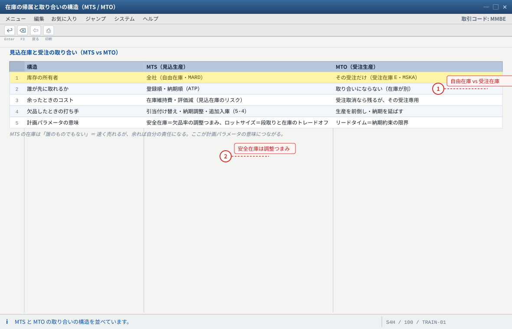
- 1 分水岭は「入库先が自由在庫か受注在庫か」の 1 点。需要源は PIR か受注か
- 2 安全在庫を上げると欠品率は下がるが在庫金額は増える。正解は状況次第、理由が言えることが価値
自システムでの確認：MMBE の「非制限利用」と「得意先別（特別在庫）」、表は MARD（自由在庫）と MSKA（受注在庫）。
5-6 故障対照表（12 項：症状から引く。覚えなくてよい）
見込生産（MTS）场景最常出现在练习与现场的 12 个症状。每条都给出症状 → 根因 → 确认手顺——注意「确认手顺」才是本表的重点。
| # | 症状 | 根因の候補 | 確認手順（T-code / 表） |
|---|---|---|---|
| 1 | MRP を跑っても計画手配が生成されない | MRP タイプ ND（計画なし）/ 手配タイプ空 / 純所要量が 0（在庫で足りている） | MM03 MRP1〜2 → MD04 の利用可能数量 → MD01N 実行ログ |
| 2 | PIR を登録したのに MD04 に出ない | 版が 00 でない / 納入日が表示期間外 / プラント在庫ビュー無し | SE16N: PBED-VERID/PDATU・SE16N: T459U・MM03 |
| 3 | 受注が MD04 に出ない（需求が立たない） | 納入日程行カテゴリの所要量転送 OFF（VBEP-BEDSD）/ 品目に MRP ビュー無し | VA03 納入日程行・VOV6・VOV5・SE16N: TVEP |
| 4 | 受注の確認済数量が 0 / 欠品扱い | 在庫確認 OFF（VBEP-ATPPR）/ 品目 MRP3 の在庫確認が空 / スコープに在庫・入庫予定が入っていない | CO09・OVZ9・MM03 MRP3・OVZ2 |
| 5 | 受注しても PIR が消費されない | 戦略グループが 10/11 系（消費しない）/ 消費モード・逆順消費期間の外 / 戦略グループが空 | MM03 MRP3（MARC-STRGR/VRMOD/VINT1/VINT2）・MD04 の消費明細・OPPT |
| 6 | 完成品の入庫が「得意先別（受注在庫）」になる | 品目 MRP4 が「個別所要量のみ」/ 指図が受注に紐づいている（MTO 化） | MM03 MRP4・CO03・SE16N: AFPO-KDAUF/KDPOS・MMBE |
| 7 | VOV4/VOV5 の自建行が効かない | 品目マスタの戦略グループが優先される / 決定の順序（OVZI）の理解不足 | MM03 MRP3・OVZI・VA03 の明細/納入日程行 |
| 8 | MD05/MD06 に MRP リストが出ない | MRP Live（MD01N）は MRP リストを作らない | MD04 で確認する（SAP KBA 2640393） |
| 9 | 差異計算で「目標原価がありません」 | 標準価格が未リリース（CK24 未完）/ 原価計算バリアント未設定 / レート（KP26）無し | MM03 会計1（MBEW-STPRS）・CK13N・KP26・OKKN |
| 10 | 差異が大きいのに原因が分からない | 実績時間の入力ミス / 部品の実際単価 / スクラップ未記録 / 残差（設定漏れ） | KKS2 のカテゴリ別内訳・AFRU・MATDOC・OKV1/OKVG |
| 11 | 決済しても FI に何も出ない | 差異計算未実施 / 決済ルール未設定（COBRB）/ 会計期間閉鎖 | KKS1 → KO88 のログ・FB03・決済プロファイル・OB52 |
| 12 | 在庫があるのに出荷（PGI）できない | 引当未実施（ピッキング数量 0）/ 在庫タイプ違い（品質検査・ブロック）/ 別受注が先取り / 保管場所違い | VL03N の在庫/引当・MMBE の区分別在庫・CO09・MB52 |
共通の型：① 品目マスタ（MRP1〜4）② SD 側の 3 つの決定（VOV4/VOV5/VOV6）③ 実行結果（MD04/CO09/MMBE）——この 3 層を行き来できるかが腕の見せどころ。
5-7 MD04 の読み方表（MTS 场景里最常出现的行）
| 行の種類 | 見た目 / 参照 | 意味（MTS） | どこから来たか |
|---|---|---|---|
| 自由在庫（利用可能） | 参照なし・在庫行 | 今すぐ使える自社在庫 | MARD（101 入庫・601 出庫で動く） |
| 計画独立所要量（PIR） | 受注番号なし、版 00 | 見込の需要（見込生産の出発点） | PBED（MD61 で登録） |
| 得意先所要量 | 受注番号/得意先あり | 受注が立った需要（PIR を消費した分は差し引き済み） | VBEP（所要量転送 ON の納入日程行） |
| 計画手配 | 品目 + プラント、受注参照なし | MRP が作った補貨（まだ指図ではない） | PLAF（MD01N の結果） |
| 製造指図 | 指図番号あり（CO03 で開ける） | 確定した補充（入庫予定） | AUFK/AFPO（CO40/CO41 変換） |
| 購買依頼 / 発注 | 購買伝票番号 | 部品（外部調達）の補充 | EBAN/EKKO |
| 予約 / 引当 | 指図番号・受注番号 | 他の需要のための取り置き | RESB・VBBS |
| 利用可能数量 | 累計列 | その時点の過不足。マイナス＝MRP の仕事 | システム計算 |
「いつ、いくつ足りないか」が言えたら、そのまま C14／练习② の MRP の話に戻れる。
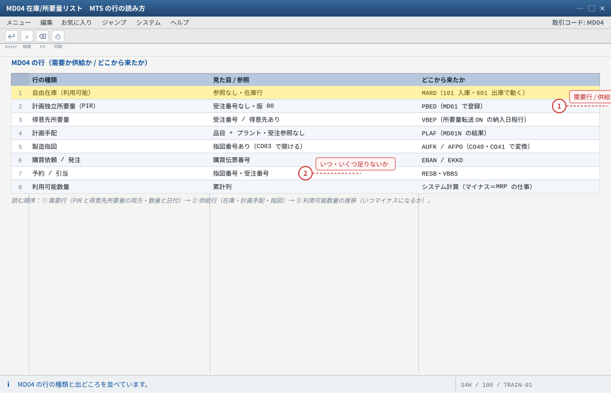
- 1 「需要か供給か」で分類する。在庫と計画手配・指図は供給側（入庫予定）
- 2 「いつ、いくつ足りないか」が言えたら、そのまま MRP（C14 / 练习②）の話に戻れる
自システムでの確認：要素名はシステム言語で変わるため、参照（受注番号・指図番号）の有無で判断するのが確実です。
5-8 発展課題
- 戦略 10 との比較：品目
ZMTS-FG10（戦略10）を作り、同じ PIR と受注でMD04がどう違うか（消費しない・消減される）を実測する。 - 戦略 11（総所要量計画）：MRP3 の混合MRP区分を
2にして、在庫があっても計画手配が出ることを確認する（やりすぎ禁物、終わったら戻す）。 - 戦略 70（組立レベル）：半製品（アセンブリ）を 1 層追加し、PIR を組立品目に置く構成を組む。
MD04がどう変わるかを見る。 - 部品を購買に切り替える：部品の手配タイプを
F（外部調達）にし、MRP から購買依頼 →ME21Nで発注 → 入庫 101 → 在庫に反映、まで通す。 - ロットサイズの比較：
EX/ 週ロット / 固定ロットで計画手配数量と在庫水準がどう変わるかを 3 パターン実測する。 - バックフラッシュ：品目 MRP1 のバックフラッシュを ON にし、
CO11Nの実績で部品が自動出庫されることを確認する（手動 261 との二重出庫に注意）。 - 取消の順序：誤った 1 件を「請求
VF11→ PGIVL09→ 入庫取消（MIGO/MBST）→ 実績CO13→ 指図TECO/削除」の順で戻す。順序を間違えると在庫と FI が壊れる。 - Cloud 对照：C16 のとおり、Cloud では作れないオブジェクトを 3 つ挙げ、代替手段を書く。
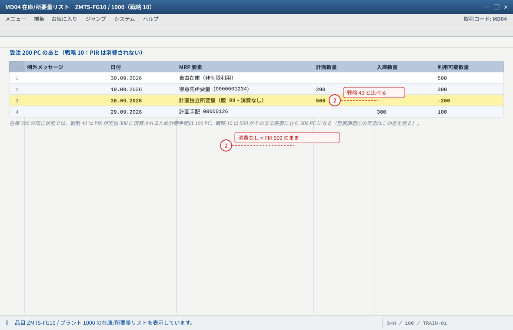
- 1 戦略 10 は受注が PIR を消費しない。PIR の行は 500 PC のまま残り、受注 200 PC と合わせて需要が二重に立つ
- 2 同じ受注でも 40 と 10 で MD04 の計画手配が変わる。4-3（戦略 40）の画面と並べて読むのが発展課題①
自システムでの確認：ZMTS-FG10 は MM01（同一 BOM / 工程・戦略グループ 10）で追加し、受注後も SE16N: PBED の PLNMG が変わらないことを確認します。戦略グループは MARC-STRGR（MM03 MRP 3）。
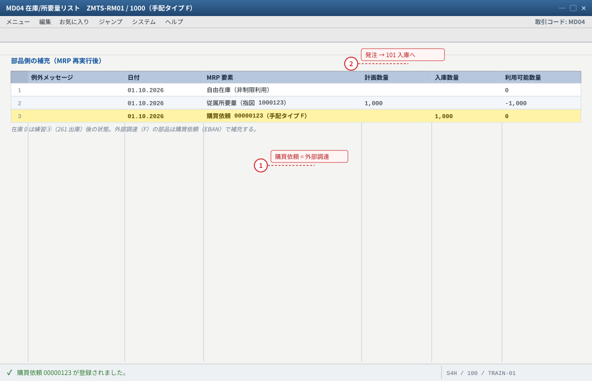
- 1 手配タイプ F = 外部調達。部品の MRP 結果は計画手配ではなく購買依頼になる（完成品の E・内製との違い）
- 2 ME21N で発注 → MIGO（参照伝票 購買発注・移動タイプ 101）で入庫すると、この行が購買発注 → 自由在庫（MMBE 1,000 PC）に置き換わる
自システムでの確認：購買依頼は SE16N: EBAN（BANFN / MENGE）、発注は EKKO / EKPO、入庫は MATDOC。手配タイプは MM03 → MRP 1。
验收（完成基准）
KKS2（或はKKS1）で差異を計算し、差異カテゴリ別の内訳を読んだ。KO88（或はCO88）で決済し、FB03で会計伝票を確認した。- 差异的 3 个去向（在库 / 卖上原价 / 差异勘定）を自分の言葉で説明できる。
- 棚卸（
MI01→MI04→MI07）を 1 回通り抜け、差異の転記を確認した。 - 安全在庫切れ・欠品の切り分け 5 手顺を、実際の T-code を挙げて言える。
- MD04 の 8 種類の行を、「需要か供給か」「どこから来たか」で分類できる。
- 故障対照表の 12 項のうち3 項以上を、症状 → 根因 → 确认手顺で説明できる（資料を見ずに）。
- 発展課題のうち2 つ以上を実際に実行した（戦略 10 との比較・部品の購買化・ロットサイズ比較 など）。
KKS1/KKS2/KKAO/KO88/CO88）と期末処理の順序：SAP Community CO Product Costing – Period End Closing / Variance calculation before Settlement Run。差異カテゴリ（入力価格・入力数量・資源使用・混合価格・出力価格・スクラップ・残差）と目標原価（Target version 0 = 標準原価ベース）：SAP Help Variance Categories、SAP Learning Performing Variance Calculation。
差異キー/差異計算バリアントの設定（
OKV1/OKVW/OKVG）：SAP Community Variance calculation_PP。棚卸（
MI01/MI04/MI07）と差異転記（OBYC の BSX/GBB）：SAP Help（在庫管理・棚卸）。戦略 10/11/70 の挙動：SAP PRESS blog 4 Strategies for Make-to-Stock Production with SAP S/4HANA、SAP Tribal Knowledge SAP Planning Strategies、SAP Learning Exploring Planning Strategies。
MRP Live の差異（MRP リスト無し）：SAP KBA 2640393 / SAP Note 1914010。
Cloud の対応フロー：スコープアイテム
BJ5（Make-to-Stock Production – Discrete Manufacturing）。